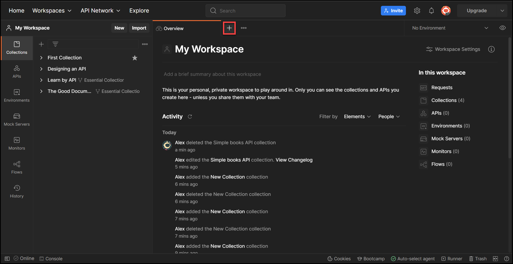

How to Create a POST API Request in Postman
Introduction
This article describes the process of creating a POST API request in Postman by using an example of creating a book order.
Contributed by Alexandra Pindrochova
Prerequisites
Before you start, ensure that you have the following:
- Active Postman account
- API documentation specific to your URL (For the purpose of this article, refer to Simple Books API documentation.)
Creating a POST API request in Postman
Step 1:
Go to Postman and log in to your Postman account by clicking the Sign In button.
Step result: The system displays the Sign In page.
Step 2:
On the Sign In page, enter your email or username and password in the respective fields, and then click Sign In.
Step result: The system displays the Home page.

Step 3:
On the Home page, from the Workspaces drop-down list in the header, select My Workspace.
Step result: The system displays My Workspace.
Step 4:
On the My Workspace page, create a new API request by clicking the plus icon in the main work area.
Step result: The system displays a new API request.
Step 5:
Enter the request URL into the API request bar and add the /orders endpoint.
For the purpose of this article https://simple-books-api.glitch.me/orders is used as an example.
From the http request methods drop-down list, select POST.
Save your request to a collection by clicking the drop-down list next to the Save button, and then select Save as.
Step result: The system displays the Save Request dialog box.
In the Save Request dialog box, enter the value for the Request name field, and then from the Save to list, select either an existing collection or create a new collection. Click Save.
Step 7:
To submit an order, you need to register your API client by obtaining an access token. To obtain an access token, refer to How to Obtain an Access Token in Postman.
In the API request, click the Authorization tab, and then from the Type drop-down list, select Bearer Token.
In the Token field, enter the variable that you set for your collection in Step 6.
For the purpose of the example used in this article, enter the {{accessToken}} variable. Click Save.
Step 9:
In the request, click Body, select the raw radio button, and then from the drop-down list, select JSON. In the body, enter the code in JSON format to specify the object that you want to order.
Refer to Simple Books API documentation from the Prerequisites section, and then enter the following code:
{
"bookId": 1,
"customerName": "John"
}
Click Save, and then Send to submit your order.
Step result: The system displays the book that you ordered in the API response body.